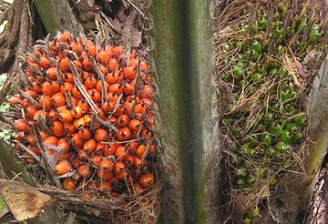
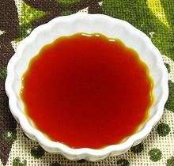
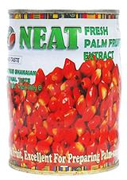
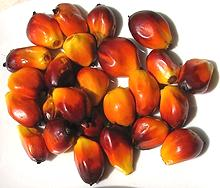

Oil Palm Fruit & Oil

[Banga (Nigeria (fruits)); Elaeis oleifera (Central and South
America), Elaeis guineensis (West Africa), also American oil
palm, Attalea maripa (not much used)]
These tropical feather palms, which can grow to over 60 feet tall, are very productive and produce oily red fruit about the size of a plum. There is evidence palm oil was used in Ancient Egypt. The African species was taken to Malaysia and Indonesia which are now the two largest producers, but they produce refined oil, not red oil.
Red Palm Oil is much used in cuisines of Central and South America, particularly Brazil, in Southeast Asia, and of course Africa. Southern India uses a lot of palm oil but gets theirs from coconut palms. virgin Palm Oil for cooking is easily recognizable by it's orange-red color.
The photo to the left, taken in Ghana, shows palm fruit ripe and two weeks from ripe, The fruit is often red and black, rather than just red, but is orange-red inside. Photo by Bongoman distributed under license Creative Commons Attribution-ShareAlike v3.0 Unported.
More on the Palm Family
|
 Red Palm Oil / Dendê Oil This Oil is much used in West Africa, and in Bahia Brazil, which has a large population descended from African slaves. In Brazil it is called Dendê Oil which is the Portuguese name. Details and Cooking. Palm Kernel Oil
This oil, pressed from the kernels discarded from culinary preparation,
is almost colorless. It is used mainly in manufacture of soap and
cosmetics. It is very high in saturated fats so semi-solid at normal
room temperatures.

The photo to the left shows the form of Oil Palm Fruit most available in North America. Several brands are available from several Internet markets. This concentrate (cream, paste, sauce, butter) is ready to use in Banga Soup and other preparations. An 800 gm / 28.2 ounce can sells for between 2018 US $6 and $7 plus shipping. The concentrate is also much used in Nigeria by those who can afford
it because it is far more convenient than whole fruit, as you will see
below.
 The photo to the left is of Oil Palm Fruit removed from the bunch and ready to prepare for cooking. Photo by T.K. Naliaka (cropped and rotated) distributed under license Creative Commons Attribution-ShareAlike v4.0 International.
|